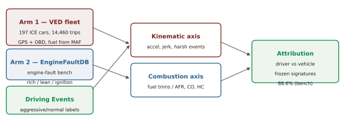
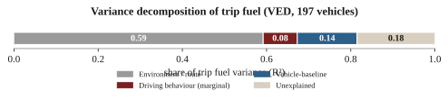
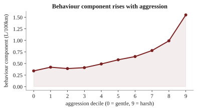
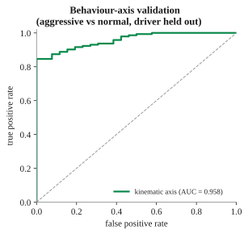
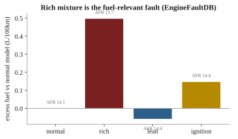
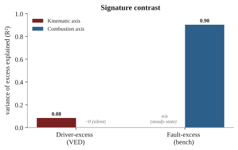
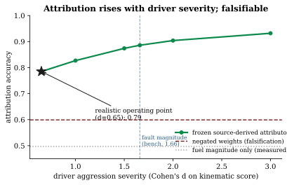
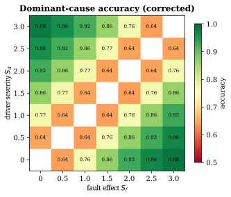
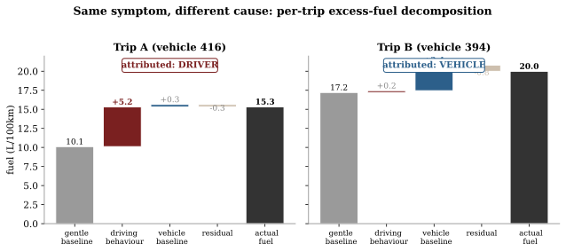

Excess fuel consumption presents the same symptom for two very different causes: an aggressive driver and a malfunctioning vehicle both burn more than expected, yet one calls for coaching and the other for maintenance. A fuel-per-distance figure cannot tell them apart. We show the two causes leave separable signatures. Driver-caused excess is transient and kinematic, expressed in acceleration, jerk, and harsh events at a normal air-fuel ratio; malfunction-caused excess, exemplified by a rich mixture, is steady-state and combustion-linked, expressed as an air-fuel-ratio shift and in the unburnt-fuel emission products. No public dataset carries fuel, mechanical-fault labels, and driver behaviour jointly. We therefore adopt a two-arm design on real data: a fleet-telemetry arm on the Vehicle Energy Dataset (VED; 197 gasoline vehicles, 14,460 trips) and a controlled engine-fault arm on EngineFaultDB, with the behaviour axis externally validated on two independent labelled driving datasets. An expected-fuel model reaches held-out \(R^2 = 0.673\) (95% CI [0.628, 0.709]); driving behaviour accounts for up to 37% of trip-fuel variance (8% of it uniquely, beyond route and weather) and a persistent vehicle-baseline for a further 14%. The rich-mixture fault burns +6.2% excess fuel with an emissions signature, while the combustion axis remains silent for driver-caused excess (held-out \(R^2 = -0.03\)), a silence that survives a trim-corrected fuel target and holds within the highest-trim vehicles. On real fleet trips, without any injection, kinematic-dominant trips carry +0.57 L/100km of excess fuel while trim-dominant trips carry none. The two causes also differ in magnitude, a realistic aggressive-driving shift costing +1.1% median fuel against the rich fault's +6.2%, yet trip-to-trip fuel noise leaves magnitude near chance as a per-trip attributor (0.56). The signatures, not the excess size, carry the attribution. No real dataset can score attribution accuracy: the target fleet has no ground-truth cause, and any proxy built from the two axes is circular with the attributor. We therefore use a controlled injection, constrained so both causes raise fuel identically and magnitude carries no information. Signatures learned only in their source domains, then frozen and combined on the target without joint supervision, attribute driver-versus-fault excess at accuracy 0.856 and AUROC 0.93 at the realistic trip-level operating point. At a deliberately conservative floor that equalizes the two causes' fuel use and drops to a weaker window-level driver effect, accuracy is 0.785, nine points above a no-driver-information floor, matching the closed-form prediction of the score model, and passing a negated-weights falsification while a fuel-only baseline stays at chance. Because real magnitudes differ by cause, that equal-magnitude accuracy is a floor, and a tight one: adding real fuel magnitude lifts it by only 0.003, since per-trip noise swamps the gap. A conformal abstention rule gives each issued decision a finite-sample selective-risk guarantee. Both axes derive from standard on-board-diagnostics channels, so a fleet can decide, from a single trip's ordinary telematics, whether an over-consuming vehicle needs its driver coached or its engine inspected.

Fuel is the largest controllable operating cost of a commercial vehicle fleet and a direct source of tailpipe emissions. When a vehicle consistently burns more than expected, an operator faces a decision with two very different remedies: coach the driver, or service the vehicle. The remedies are not interchangeable. Sending an efficient driver to remedial training wastes time and erodes trust, and dispatching a mechanically sound vehicle to the workshop wastes a service slot; conversely, a genuine fault left uncorrected keeps burning fuel and may worsen. The decision therefore rests on knowing the cause of the excess, not merely its size.
We treat this as an attribution problem. For a trip that consumed more fuel than its route and conditions warrant, let the excess be the difference between observed and expected consumption; the task is to decompose that excess into a driver-behaviour component and a persistent vehicle component, which Section 4.4 formalizes as the vehicle-baseline. Raw fuel per distance cannot perform this decomposition, because both an aggressive driving style and a degraded engine inflate the same scalar. The question is operationally valuable and, on public data, largely unanswered: fuel-consumption models predict the scalar accurately without decomposing its causes; eco-driving and behaviour-scoring work quantifies the driver in isolation; and predictive-maintenance work targets the fault directly but rarely treats fuel efficiency as the symptom to explain.
Our approach rests on a physical observation about how the two causes express themselves. Driver-caused excess is transient and kinematic: it lives in acceleration, jerk, and harsh acceleration or braking events, while the engine continues to run at its normal, near-stoichiometric air-fuel ratio. Malfunction-caused excess, taking the rich-mixture fault as the canonical fuel-relevant case, is steady-state and combustion-linked: it shifts the air-fuel ratio away from stoichiometric and leaves its trace in the exhaust chemistry, in elevated carbon monoxide and unburnt hydrocarbons. Crucially, both signatures are observable on standard on-board-diagnostics hardware. The kinematic axis derives from GPS and inertial channels; the combustion axis derives from the short- and long-term fuel trims that every closed-loop engine reports, and, on a bench, from the air-fuel ratio directly.
The obstacle to demonstrating this on real data is that no public dataset carries fuel consumption, mechanical-fault labels, and driver behaviour together. A dedicated search (Section 3.4) confirms the gap: the datasets that pair fuel with fault labels lack driver context or ship only dimensionality-reduced features, and the driving-behaviour datasets lack fuel. We therefore adopt a two-arm design on the datasets that each carry one ground truth, and bridge them with a semi-synthetic experiment, controlled injections into real trips, that supplies the competing-cause labels no real dataset provides. The fleet-telemetry arm (VED) grounds the decomposition and the driver side; the engine-fault arm (EngineFaultDB) grounds the malfunction signature; two independent labelled driving datasets validate the kinematic axis; and a controlled injection with source-calibrated effect sizes measures attribution accuracy where no real dataset can, as a conservative floor.
The evidence chain (Figure 1) runs as follows: an expected-fuel model and its variance decomposition establish that behaviour and a persistent vehicle-baseline are separable, measurable shares of trip fuel; the behaviour axis is validated to transfer to two independent datasets; the rich-mixture fault is shown to produce measurable excess fuel with an emissions signature; a signature contrast shows the combustion axis is silent for driver-caused excess; and the semi-synthetic experiment shows that, when fuel magnitude is made uninformative, signatures frozen from their source domains recover the cause at 78.5% at a realistic operating point (rising with driver severity), while a matched fuel-only baseline is at chance. The remainder of the paper is organized as related work (Section 2), data (Section 3), method and equations (Section 4), experimental setup (Section 5), results for the two arms and the attribution (Sections 6-8), discussion (Section 9), limitations (Section 10), and conclusion (Section 11).
Four largely separate literatures meet in this problem: fuel-consumption modelling, eco-driving and behaviour scoring, predictive maintenance and engine-fault diagnosis, and telemetry anomaly detection. A fifth thread, explainable attribution, contains the nearest prior work. We review each and state where our contribution sits; the positioning is summarized in Table 1.
Physics-based models map instantaneous kinematics to fuel and emissions. Vehicle specific power [7] expresses the tractive power demand per unit mass and underlies many modal emission models; the VT-Micro family [8] fits polynomials in speed and acceleration to instantaneous fuel and emission rates; and the power-based VT-CPFM [11] derives consumption from a physical power formulation with few calibrated parameters. Data-driven models now lead on on-board-diagnostics and telematics inputs: tree ensembles are the reliable workhorse and have been shown to beat both neural baselines and the engine-control-unit estimate against ground-truth fuel meters [4], and kernel methods map engine parameters to fuel rate from OBD-II [9]. Classic modal-emission models set the physical baselines ([27] CMEM, [28] MOVES), and recent data-driven fuel models use smartphone telematics [29], cascaded real-world regression [30], neural drive-cycle models [31], and behaviour-aware predictors [32]. These models predict consumption accurately, but they estimate a single quantity; none decomposes that quantity into the driver and vehicle contributions that an operator must separate.
Driving style moves fuel use substantially; data-driven eco-driving reviews report savings of roughly 5-15% from smoother driving [5], a range our behaviour counterfactual reproduces (Section 6.2), and recent reviews survey behaviour-to-fuel machine learning specifically [15]. Driver behaviour has been classified from OBD signals and used to predict fuel consumption [12], recognized as a driving style from smartphone inertial sensors [14], and linked to efficiency through drive-cycle simulation [13]. Large naturalistic-driving studies (SHRP2 [33]; UDRIVE [37], [38]) and a driving-style-recognition survey [36] underpin behaviour recognition, eco-driving reviews quantify the fuel impact [34], and usage-based insurance applies telematics scoring commercially [35]. This literature scores the driver in isolation. It does not separate the driver's contribution from the vehicle's, and in single-driver-per-vehicle data the two are confounded unless a model controls for one.
Fault-diagnosis work detects sensor and actuator faults in the air-fuel path from telemetry: neural detection and isolation of multiple engine-sensor faults [16], fault-tolerant handling of the mass-air-flow sensor whose signal we use to derive fuel [17], and deep-learning fault diagnosis from driving signals [18]. Broader predictive-maintenance research contributes benchmark datasets and methods, including the SCANIA Component X multivariate benchmark [39], LSTM remaining-useful-life estimation [40], diesel-engine vibration diagnosis [43], and recent surveys [41], [42]. The EngineFaultDB dataset we use as our malfunction arm was released with a fault-classification baseline [2]; we repurpose it to quantify the fuel signature of a fault rather than to classify faults. These methods target the fault directly and treat fuel efficiency as an input, not as the symptom to be attributed.
The detector toolbox is mature: isolation forest [19], one-class support-vector methods [44], change-point detection [45], and autoencoder or recurrent models catalogued in recent surveys [47] and toolkits such as PyOD [46]. In the automotive setting, however, most of this work targets controller-area-network intrusion and safety rather than fuel efficiency, for example LSTM autoencoders [20], recurrent autoencoders for embedded intrusion detection [21], and spatiotemporal detection for connected vehicles [22]. These methods flag that a trip is anomalous; they do not assign a fuel anomaly to a driver-versus-vehicle cause. Closest in spirit, recent work detects anomalies in OBD snapshots and adds a SHAP-based cause investigation with synthetically generated anomalies [24]; it investigates which features drive a flagged anomaly, whereas we attribute the competing driver-versus-vehicle cause across heterogeneous datasets that carry no joint naturalistic cause labels. Fuel theft or leakage is a related but distinct anomaly, detected as an abrupt change point [10]; that is a sudden step in fuel level, whereas the excess we attribute is a sustained efficiency shift.
Feature-attribution methods such as SHAP [23] explain a model's output in terms of its input features, and counterfactual explanations state the minimal input change that would flip a decision [48]. The nearest prior work applies explainability to our exact problem: Barbado and Corcho detect fuel-consumption anomalies on fleet telematics with interpretable feature relevance and counterfactual recommendations [3]. Their method identifies which features co-occur with an anomaly and what change would return an outlier to normal. It attributes an anomaly to features, not to a cause class: it does not say whether the excess is the driver or the vehicle, and its feature relevances are not validated against an external ground truth for either cause. Our signature-based decomposition is the increment: we group observables into two physically motivated axes, validate each against an independent signal, and measure the resulting cause attribution. Methodologically the setting is a form of weak supervision [25], drawing on transfer learning [49], multi-source domain adaptation [50], data-programming weak supervision [51], and mixture-of-experts evidence fusion [52]: the target fleet carries the outcome but no cause labels, while each competing cause is labelled only in a separate source domain with its own feature space, so cause-specific signatures must be learned from the sources and combined on the target without joint supervision.
| Approach | Detects excess | Ranks features | Attributes driver vs vehicle | Externally validated |
|---|---|---|---|---|
| Fuel modelling + residual threshold [4] | yes | no | no | n/a |
| Eco-driving / behaviour scoring [5,12] | driver only | partial | no | n/a |
| Engine-fault diagnosis [16] | vehicle only | partial | no | fault label |
| Anomaly detection + feature relevance [3] | yes | yes | no | no |
| This work | yes | yes | yes (controlled injection, 0.785–0.89) | axes: yes |
VED [1] is a naturalistic driving dataset collected in Ann Arbor, Michigan from November 2017 to November 2018, comprising 383 personal vehicles logged over roughly 374,000 miles through OBD-II loggers, with synchronized GPS trajectories and engine channels. Each record carries a timestamp, latitude and longitude, vehicle speed, mass air-flow, engine RPM, absolute load, outside air temperature, auxiliary power, and, for gasoline vehicles, the short- and long-term fuel trims; records are keyed by a unique vehicle and trip identifier. We restrict the analysis to the 264 internal-combustion (gasoline) vehicles, excluding hybrids and electric vehicles whose fuel path is confounded by the electric drive. The dedicated OBD fuel-rate parameter is essentially unpopulated in VED, so fuel is derived from mass air-flow (Eq. 1), the standard practice for this dataset. After resampling each trip to a uniform 1 Hz grid and applying quality filters (a minimum trip distance of 0.5 km, a minimum duration of 60 s, and at least 50% valid mass air-flow coverage), the pipeline yields 14,460 trips across 197 vehicles. The variance decomposition and attribution analyses further clip the fuel target at its 1st and 99th percentiles to remove sensor glitches, leaving 14,170 trips across 194 vehicles; the semi-synthetic study restricts to the 139 vehicles with at least 15 trips carrying usable fuel-trim coverage, so that per-vehicle baselines are stable. Median trip length is about 7 minutes.
EngineFaultDB [2] is a controlled test-bench dataset built around a C14NE spark-ignition engine, with 55,999 records over 14 variables: manifold absolute pressure, throttle position, torque, power, RPM, vehicle speed, exhaust concentrations of carbon monoxide, hydrocarbons, carbon dioxide and oxygen, the air-fuel equivalence ratio lambda, the air-fuel ratio, and fuel consumption in both litres per hour and litres per 100 km. A fault label takes four values: 0 normal, 1 rich mixture, 2 lean mixture, and 3 low-voltage ignition. The rich-mixture label is confidently identified from its emission signature (elevated carbon monoxide); the lean-versus-ignition mapping of labels 2 and 3 is taken from the source paper's listing order, as the definitive mapping resides in a table published only as an image. Our result concerns the rich-mixture fault, whose label is unambiguous. The bench carries no driver context, so it grounds the malfunction fuel signature but not driving behaviour.
The Driving Events dataset [6] provides smartphone inertial recordings from three drivers, with a linear-acceleration stream at approximately 400 Hz and a companion file labelling time windows as aggressive manoeuvres (right or left turn, braking, acceleration, lane change) or non-aggressive events. After joining sensor rows to labelled windows we obtain 169 events, 143 aggressive and 26 non-aggressive. Two properties matter for interpretation: the sensing regime differs from VED (400 Hz smartphone inertial versus 1 Hz OBD kinematics), and the class balance is skewed toward aggressive events.
No public dataset carries fuel consumption, mechanical-fault labels, and driver behaviour jointly, which is precisely what a single-dataset attribution study would need. Our search of the candidates substantiates this. EngineAD pairs a real-fleet fuel-rate channel with technician fault labels but is released as eight principal components, so the raw fuel signal is not recoverable, and access is gated. The diesel-fault dataset DEFault carries fault labels but no fuel-consumption channel, only in-cylinder pressure and vibration. SCANIA Component X provides real heavy-truck maintenance records but fully anonymized signals with no identifiable fuel variable, and the NASA C-MAPSS prognostics benchmark is a simulated turbofan with no real malfunction and no driver context. EngineFaultDB is the only openly downloadable dataset that pairs fuel consumption with fault labels, and it is a bench without drivers. This documented gap (Table 2) is the reason for the two-arm design and the semi-synthetic bridge.
| Dataset | Role | Ground truth | Scale used | Sampling | License |
|---|---|---|---|---|---|
| VED [1] | Driver arm | Real fleet, behaviour | 197 cars / 14,460 trips | 1 Hz | Apache-2.0 |
| EngineFaultDB [2] | Malfunction arm | Labelled engine faults | 55,999 samples | bench | GPL-3.0 |
| Driving Events [6] | Behaviour validation | Aggressive vs normal | 3 drivers / 169 events | 400 Hz | CC-BY-4.0 |
| UAH-DriveSet [26] | Behaviour validation (1 Hz) | Normal/drowsy/aggressive | 6 drivers / 940 windows | 1 Hz | research use |
We state the task abstractly, because the difficulty is general and not specific to fuel. A target domain \(D_T\) contains an engineering outcome \(y\) and telemetry \(x\) but no labels for the competing causes. Two competing causes, A (driver behaviour) and B (a vehicle fault), are each labelled only in a separate source domain, \(D_A\) and \(D_B\), which do not share the target's raw feature space. The goal is to attribute a target-domain excess to A or B, or to abstain, without any jointly labelled example ever existing. Domain knowledge supplies, for each cause, a transferable signature: a scoring function of the observables that rises when that cause is present. The method (Algorithm 1) fits an expected-outcome model to define excess on the target, learns each signature in its own source domain and freezes it, places the two signatures on a common standardized scale on the target, validates each against its source, and attributes by comparing the two frozen scores with an abstention margin. The remaining subsections instantiate each step for excess fuel; the formulation itself is a form of weak supervision across heterogeneous sources [25].
For excess fuel, \(M\) is the expected-fuel model (Section 4.3), cause A is aggressive driving with a kinematic signature validated on labelled driving (Section 6.3), and cause B is a rich-mixture fault with a fueling/combustion signature validated on the engine bench (Section 7); in the notation of Section 4.6, \(z^A = z^k\) and \(z^B = z^c\). The frozen attribution and its abstention behaviour are evaluated in Section 8.4.
Because the OBD fuel-rate parameter is unpopulated in VED, we derive the instantaneous fuel rate from mass air-flow \(\dot m_{\text{air}}\) (g/s) assuming a stoichiometric gasoline air-fuel ratio of 14.7 and a fuel density of 745 g/L,
\[ \dot V_{\text{fuel}}\;[\text{L/h}] \;=\; \frac{\dot m_{\text{air}}}{14.7 \times 745}\times 3600, \tag{1}\]and integrate over the 1 Hz trip grid, normalizing by trip distance to obtain the trip target \(f\) in litres per 100 km. For the robustness analysis of Section 8.5 we also form a trim-corrected target that restores the fuel the stoichiometric assumption ignores,
\[ \dot V^{\text{corr}}_{\text{fuel}} \;=\; \dot V_{\text{fuel}}\left(1 + \frac{\text{STFT}+\text{LTFT}}{100}\right), \tag{2}\]where STFT and LTFT are the short- and long-term fuel trims in percent.
We predict trip fuel from a behaviour feature block \(x^{\text{beh}}\) and a conditions block \(x^{\text{env}}\) (Table 3) with a gradient-boosted regression tree ensemble \(M\),
\[ \hat f_i \;=\; M\!\left(x^{\text{beh}}_i,\, x^{\text{env}}_i\right), \tag{3}\]and define trip excess as the out-of-fold residual
\[ e_i \;=\; f_i - \hat f_i . \tag{4}\]All predictions are out-of-fold under a GroupKFold split by vehicle, so no vehicle is ever scored by a model that has seen any of its trips; this prevents the model from memorizing a vehicle's identity and ensures the residual reflects deviation from the fleet, not from the vehicle itself. Behaviour features include mean and dispersion of speed, mean positive acceleration and its 95th percentile, jerk, harsh-acceleration and harsh-braking rates (events exceeding \(\pm 2.5\ \text{m/s}^2\), counted per km), idle fraction (speed below 3 km/h), stops per km, highway fraction, and vehicle specific power computed with zero road grade; conditions include outside air temperature, air-conditioning and heater power, vehicle weight, distance, and duration.
| Block | Features |
|---|---|
| Behaviour \(x^{\text{beh}}\) | speed mean, speed SD, speed p85, mean positive acceleration, acceleration p95, deceleration p05, jerk RMS, harsh-accel/km, harsh-brake/km, idle fraction, stops/km, highway fraction, vehicle specific power |
| Conditions \(x^{\text{env}}\) | outside air temperature, AC power, heater power, weight, distance, duration |
| Combustion axis | short-term fuel trim, long-term fuel trim (VED); air-fuel ratio, lambda, CO, HC (bench) |
The persistent per-vehicle deviation, the vehicle-baseline, is the mean out-of-fold residual of vehicle \(j\),
\[ v_j \;=\; \frac{1}{n_j}\sum_{i \in j} e_i . \tag{5}\]The behaviour component of a trip is a counterfactual: the model's prediction for the observed driving minus its prediction when the aggression features are set to a gentle reference \(x^{\text{ref}}\) (the population 20th percentile of each aggression feature), holding conditions fixed,
\[ b_i \;=\; M\!\left(x^{\text{beh}}_i, x^{\text{env}}_i\right) - M\!\left(x^{\text{ref}}, x^{\text{env}}_i\right). \tag{6}\]To size the components at the population level we decompose the variance of \(f\). With \(R^2_{\text{env}}\) the coefficient of determination of a conditions-only model and \(R^2_{\text{full}}\) that of the full model, the unique (marginal) behaviour share is \(R^2_{\text{full}}-R^2_{\text{env}}\); the vehicle-baseline share is the between-vehicle sum of squares of the residual expanded over trips, divided by the total sum of squares,
\[ s_{\text{veh}} \;=\; \frac{\sum_i (v_{j(i)}-\bar e)^2}{\sum_i (f_i-\bar f)^2}, \tag{7}\]and the unexplained share is \(1-R^2_{\text{full}}-s_{\text{veh}}\); here \(\bar e\) and \(\bar f\) are the fleet-mean residual and fleet-mean trip fuel.
The kinematic axis summarizes transient aggression through the behaviour features above; the combustion axis measures the deviation of the air-fuel ratio from stoichiometric. On the bench the axis is the air-fuel-ratio deviation directly. In VED the observable is the short- and long-term fuel trims, which are the engine control unit's feedback corrections to the base fuel schedule rather than a direct air-fuel-ratio measurement; we therefore treat the VED side as a fueling-correction signal, \(c^{\text{VED}} = \text{STFT}+\text{LTFT}\), placed on a common percent-fuel-per-air scale with the bench,
\[ c^{\text{bench}} \;=\; \left(\frac{14.7}{\text{AFR}}-1\right)\times 100 . \tag{8}\]The signature contrast regresses each excess on each axis, reporting the held-out coefficient of determination. The informative comparison is whether the combustion axis, which by construction tracks fault-caused excess, also tracks driver-caused excess; the claim is that it does not.
Because no real dataset labels a trip's excess by cause, we construct ground truth by injection. From each real base trip we form a driver-caused and a fault-caused variant that raise fuel by the same amount, so that fuel magnitude carries no information about the cause. This equal-fuel constraint is deliberately adversarial: in reality the two causes are not fuel-matched (Section 8.3 measures a realistic driver shift at +1.1% median fuel against the fault's +6.2%), so withholding magnitude makes the resulting accuracy a floor rather than an optimistic estimate; Section 8.3 quantifies how tight the floor is. Each variant perturbs only its own axis, at the feature level rather than at the score level, so that the frozen signature weights genuinely determine the outcome. The driver variant shifts the real kinematic feature vector along the aggressive direction \(\mathbf{d}\) learned on the external driving data, while the fault variant shifts the fuel trim; writing \(\mathbf{x}\) for the standardized kinematic features and \(c\) for the combustion axis,
\[ \text{driver:}\;(\mathbf{x}+a\,\mathbf{d},\;c), \qquad \text{fault:}\;(\mathbf{x},\;c+S_{\text{fault}}). \tag{9}\]The two effect sizes are calibrated from their sources, not assumed equal. The fault shift is the bench rich-mixture combustion deviation, 3.0% fuel per air, over the median within-vehicle long-term-trim standard deviation of 1.79%, giving \(S_{\text{fault}} = 1.66\). The driver step \(a\) is set once so that the frozen kinematic score shifts by \(S_{\text{driver}}\) standard deviations, where \(S_{\text{driver}} = 0.65\) is the measured Cohen's \(d\) of that score between aggressive and normal driving in the external dataset. The driver signature is the frozen logistic learned on the source; the attribution rule compares the two unit-variance scores, and nothing is fit to the injection labels. A falsification control replaces the frozen weights with negated, shuffled, or aggression-orthogonal weights; a classifier given only the matched fuel increase is the chance baseline.
Attribution itself is by source-calibrated likelihood-ratio fusion with conformal abstention, not by a bare margin. Under the injection model each cause shifts its own unit-variance score by its calibrated amount, so per cause the log-likelihood ratio of present versus absent is \(\ell_A = \log \phi(z^A; S_A,1) - \log \phi(z^A; 0,1)\) and likewise \(\ell_B\); the unit is attributed to \(\arg\max(\ell_A,\ell_B)\), or to none when both ratios fall below one. The decision statistic is the margin \(m = |\ell_A - \ell_B|\); a threshold \(\tau_\alpha\) is set by split conformal on held-out labelled variants using a Hoeffding upper confidence bound, so that among issued decisions the error rate obeys \(P(\text{error}) \le \alpha\) to a stated confidence. Because the injection is Gaussian by construction, the fusion is the Bayes rule, and the two-class accuracy has the closed form \(\tfrac12[\Phi(S_A/\sqrt2)+\Phi(S_B/\sqrt2)]\) for the score-wise rule and \(\Phi(\lVert\mu_A-\mu_B\rVert/2)\) for the fused rule; the measured values (Section 8.3) agree with these to within 0.01, which is itself a check that the unit-variance score model holds on real fleet data. The evidential weight of the experiment therefore rests on the two calibration constants, the falsification controls, and the real-data contrast of Section 8.3, not on the accuracy number alone.
We compare against the detection and feature-relevance methods the literature offers: an isolation forest [19] over trip features as an unsupervised anomaly detector; permutation importance over the fuel model as the feature-relevance surrogate used by explainable anomaly work [3]; and a pooled model that omits any vehicle term, to show how much per-vehicle systematic effect is left unattributed when the vehicle is not modelled.
The expected-fuel model is a histogram gradient-boosted regression tree ensemble (300 boosting iterations, learning rate 0.05, and maximum depth 5; the headline coefficient of determination is unchanged at 400 iterations and depth 6), trained under 5-fold GroupKFold by vehicle with a fixed random seed. The fuel-model coefficient of determination is stable across five seeds, ranging 0.672 to 0.676. Confidence intervals throughout are cluster bootstraps that resample whole vehicles with replacement over 1,000 draws and report the 2.5th and 97.5th percentiles; for the behaviour-validation study the bootstrap resamples events, and the permutation test uses 1,000 label permutations with the leave-one-driver-out cross-validation repeated inside each. On the bench, folds are shuffled: the records are ordered within each fault group, so contiguous folds would partition the rich subset into disjoint operating ranges and force extrapolation, and the rows are exchangeable for this regression. Software: Python 3.14, scikit-learn 1.8, pandas 2.3, scipy 1.17, and pyarrow. Datasets are obtained from their original sources and are not redistributed; the pipeline regenerates every reported number. The expected-fuel conclusions are not specific to the gradient-boosted model: under the same vehicle-grouped protocol a ridge baseline reaches \(R^2 = 0.663\) and a random forest 0.640, against the boosted model's 0.673 and a mean predictor's 0.00. Engine-state channels (RPM, load) are deliberately excluded from the expected-fuel model; adding them raises predictive \(R^2\) to 0.738 but they are engine outputs rather than driver inputs, and their inclusion would let the predictor absorb part of the diagnostic signature we aim to isolate.
The expected-fuel model reaches a held-out coefficient of determination of 0.673 (95% CI [0.628, 0.709]) with a mean absolute percentage error of 13.3% (95% CI [12.3, 14.3]), stable across seeds. This accuracy is in the range reported for OBD-based fuel models on other fleets [4,9]. The model's role is to define a well-calibrated expectation from which excess is measured.
Decomposing the variance of trip fuel (Table 4, Figure 2) shows that route and environment dominate, that driving behaviour contributes a unique 8% beyond conditions and up to 37% counting the variance it shares with route, and that a persistent vehicle-baseline accounts for a further 14%. The vehicle-baseline is a real, size-independent effect: regressing the per-vehicle fixed effect on engine displacement and weight explains only 23% of it, leaving roughly three-quarters unexplained by vehicle size. This is the component that an operator would want to route to inspection, and it is invisible to a model that does not represent the vehicle.
The vehicle-baseline survives out-of-sample estimation. Estimating each vehicle's offset on one random half of its trips and evaluating the fuel variance it explains on the held-out half gives a cross-fitted share of 0.136–0.138 (stable across a minimum of 5, 10, 15, or 20 trips per vehicle), essentially unchanged from the 0.143 in-sample value, an empirical-Bayes shrinkage estimate agrees (0.138), and demeaning residuals within each fold before forming the offsets changes the share by less than 0.005, so it is not a fold-bias artifact. The offsets are highly reliable: the split-half correlation of per-vehicle baselines is r = 0.95 (160 vehicles with at least ten trips). A persistent, statistically stable per-vehicle component therefore survives honest out-of-sample estimation. We label it a persistent vehicle-associated residual, not a verified malfunction: VED has effectively one driver per vehicle, so it cannot separate a vehicle's mechanical state from its habitual driver and routes (Section 10); the malfunction side of the attribution is anchored on the controlled bench, where the fault is actually induced.
| Component | Share of fuel variance | 95% CI |
|---|---|---|
| Environment / route (conditions only, \(R^2_{\text{env}}\)) | 0.593 | [0.542, 0.636] |
| Behaviour only (\(R^2_{\text{beh}}\)) | 0.368 | n/a |
| Full model (\(R^2_{\text{full}}\)) | 0.673 | [0.628, 0.709] |
| Behaviour, unique marginal | 0.080 | [0.060, 0.102] |
| Environment, unique marginal | 0.305 | n/a |
| Vehicle-baseline (\(s_{\text{veh}}\)) | 0.143 | [0.114, 0.174] |
| Unexplained | 0.184 | n/a |
The behaviour counterfactual quantifies the driver component in physical units. Relative to a gentle-driving reference, the median trip carries an excess of 0.47 L/100km (about 5% of median fuel), rising to 1.59 at the 90th percentile. The component increases across deciles of the harsh-event rate (Figure 3): its mean rises from 0.34 to 1.55 L/100km, monotone from the median upward, with a Spearman rank correlation of 0.96 across deciles (\(p < 10^{-4}\)). Because the harsh-event rate is itself an input to the behaviour features, this is an internal face-validity check; the independent validation is the external dataset of Section 6.3. The magnitude is consistent with the 5-15% eco-driving range in the literature [5,15].


On the Driving Events dataset the kinematic amplitude features separate aggressive from non-aggressive events with the driver held out. Individually, the strongest features already discriminate (acceleration-magnitude dispersion AUC 0.672, 95th percentile 0.657, energy 0.646, harsh rate 0.639; all Mann-Whitney \(p<0.05\)), while raw jerk at 400 Hz does not (AUC 0.48), consistent with amplitude rather than derivative carrying the signal at that sampling rate. A logistic classifier over the amplitude features reaches a leave-one-driver-out AUC of 0.958 (95% CI [0.927, 0.981]; per-driver 0.984, 0.934, 0.992; Figure 4). A random forest reaches 0.79; with only two training drivers per fold the linear model generalizes across drivers better, and we report both. Under a 1,000-permutation test the label-permuted AUC falls to chance (mean 0.471), placing the real AUC at \(p = 0.001\). This validates that the kinematic amplitude features transfer to an independent accelerometer dataset; it is a different sensing regime (400 Hz smartphone inertial versus 1 Hz OBD), so it corroborates the axis rather than the exact VED feature set or the counterfactual magnitude.

To test transfer at the fleet's own sampling rate and across more drivers, we repeat the validation on a second, independent behaviour dataset: the UAH-DriveSet [26], whose processed streams are logged at 1 Hz (matching VED) for six drivers with normal, drowsy, and aggressive labels. Over 940 thirty-second windows (172 aggressive, 768 normal; drowsy windows excluded from the binary contrast), kinematic features computed at 1 Hz separate aggressive from normal driving with the driver held out at AUC 0.829 (logistic; 0.808 random forest; per-driver 0.76–0.92; 1,000-permutation \(p = 0.001\)). The lower value than the 400 Hz set is expected for the coarser sampling, and it is the more deployment-relevant result: the behaviour axis transfers to a different driver population, twice as many drivers, at 1 Hz, the rate OBD telematics actually provide.
We fit the expected-fuel model on the normal (fault-0) operating points only and score the faults at matched operating point. On normal data the out-of-fold residual is centred at zero with a standard deviation of 0.20 L/100km, so the baseline is well calibrated. Scoring the faults (Table 5, Figure 5), only the rich mixture burns measurably more: +0.50 L/100km, or +6.2% of median fuel, consistent with its air-fuel ratio of 13.68 against the normal 14.07 (a 7.5% enrichment of fuel per unit air) and a brake-specific fuel consumption 10.6% above normal. The lean and low-voltage-ignition faults are not excess-fuel faults. The rich-fault excess correlates with the combustion signature, not with kinematics: with carbon monoxide 0.32, hydrocarbons 0.27, and the air-fuel ratio \(-0.32\).
| Fault | Excess (L/100km) | % of median fuel | AFR | BSFC vs normal |
|---|---|---|---|---|
| Normal (0) | 0.00 | n/a | 14.07 | n/a |
| Rich mixture (1) | +0.50 | +6.2% | 13.68 | +10.6% |
| Lean mixture (2) | −0.06 | −0.7% | 14.43 | n/a |
| Ignition (3) | +0.15 | +1.8% | 14.39 | n/a |
Two checks guard the comparison. The source dataset reports that the rich fault consumes less fuel per hour; this reverses under our matched analysis because the rich records were sampled at lower power, so their per-hour consumption is low while their per-distance and per-work consumption is high. Matching on operating point isolates the true penalty. Second, the normal and rich samples overlap closely in operating point (standardized mean differences: RPM 0.09, power 0.27, speed 0.09), so the comparison is not driven by regime imbalance, and the normal reference is itself moderately rich (lambda 0.957, carbon monoxide 2.16%), which biases the +6.2% estimate conservatively downward.
The fuel signature is specific to the rich mixture. Relative to normal, the rich fault raises the combustion axis by +4.2 percentage points of fuel per air, whereas the lean and low-voltage-ignition faults move it the other way (−2.2 and −1.9). A detector that requires both an excess and an elevated combustion axis therefore fires far more often for the rich fault than for the others (flag rate 0.29 versus a 0.07 average across normal, lean, and ignition, with an out-of-fold normal reference). Lean and ignition, which are not over-fuelling faults, do not trigger the vehicle-fuel-fault signature, so the method targets the fuel-relevant fault rather than any deviation from normal. The signature is specific but its sensitivity is operating-point-dependent: the per-sample fuel-fault score ranks rich above normal only weakly (AUC 0.58), because a rich fault's fuel penalty is expressed mainly at higher load, consistent with the non-portability across operating regions in Section 8.1. This single-reading weakness is not the regime in which attribution operates: a fault is a persistent per-vehicle condition, and the combustion-axis AUC for the mean score over \(n\) readings rises from 0.54 at \(n = 1\) to 0.80 at \(n = 10\), 0.92 at \(n = 20\), and 0.99 at \(n = 50\), so the aggregated signal a real deployment sees is strongly separable even where a single sample is not.

Regressing each excess on each axis (Table 6, Figure 6) gives the central qualitative result. The kinematic axis explains driver-caused excess (held-out \(R^2 = 0.084\)) but is structurally unavailable on the steady-state bench. The combustion axis explains fault-caused excess strongly, but this cell is physically forced rather than discovered, and the informative cell is its counterpart: the combustion axis is silent for driver-caused excess (\(R^2 = -0.028\); univariate correlation \(-0.106\)).
| Axis | Driver-excess (VED) | Fault-excess (bench) |
|---|---|---|
| Kinematic (transient aggression) | 0.084 | n/a (steady-state) |
| Combustion (AFR / fuel trim) | −0.028 | 0.903* |
| univariate correlation | −0.106 | +0.333 |
The bench cell is a physical consistency check, not the claim. On the bench, air-fuel ratio and fuel are physically coupled, so a combustion axis explaining fault-excess is expected rather than discovered. The multivariate \(R^2\) of 0.903 is carried mainly by carbon monoxide (\(R^2 = 0.73\)) and hydrocarbons (0.44), the unburnt-fuel emission products, with air-fuel ratio and lambda perfectly collinear (\(r = 1.0\)) at 0.12 each; the univariate correlation of 0.33 understates the multivariate fit because a single air-fuel-ratio transform misses the emission channels. It is also interpolation, not generalization: under leave-operating-region-out cross-validation (RPM×power terciles) the all-sensor fit falls to \(R^2 = -0.48\) and a deployment-transferable subset (air-fuel ratio, lambda, oxygen; excluding the bench-only CO and HC analyzers) to 0.12, so the 0.903 reflects near-neighbour operating points rather than a portable predictor. We therefore treat this cell as a physical consistency check and rest the claim on the silent driver-excess cell and the attribution accuracy below. Of the \(2\times2\), one cell is physically forced, one is structurally absent, and the two evidential cells are the silent combustion axis on driver-excess and the kinematic axis carrying the driver signal; we therefore call this a signature contrast rather than a full double dissociation.

Existing methods detect and rank but do not attribute. The isolation forest tracks excess only weakly (correlation 0.16 with excess), aligns with the behaviour component (0.22) but not the vehicle-baseline (\(-0.01\)), and returns a single anomaly score with no cause label. Permutation-importance feature relevance ranks mean speed (0.95) and weight (0.69) highest, physical determinants of consumption but not a per-trip driver-versus-vehicle split. A pooled model that omits the vehicle term leaves 1.23 L/100km of per-vehicle systematic effect unattributed. None of these produces the decomposition our method does; because there is no cause-labelled real benchmark, this is a capability contrast; Section 8.3 provides the quantitative evaluation.
To measure attribution we give each real VED trip a driver-caused and a fault-caused variant that raise fuel by the same amount, then ask a frozen attributor to recover the cause. The equal-fuel constraint withholds magnitude information from the attributor; its physical justification, and why it makes the result a floor, follow below. Each variant perturbs only its own axis, at the feature level: the driver variant shifts the kinematic features along the aggressive direction learned on the external driving data (UAH-DriveSet, at the fleet's 1 Hz rate), and the fault variant shifts the fuel trim by the bench's rich-mixture magnitude. The two effect sizes are calibrated from their sources rather than assumed equal: a typical aggressive window is 0.65 standard deviations on the kinematic score (Cohen's d on UAH), whereas the bench rich fault is 1.66 within-vehicle standard deviations on the combustion axis. Both axes are standardized to unit variance, the driver signature is the frozen UAH logistic, and nothing is fit to the injection labels. This deployed signature is the compact four-feature, speed-only model, whose own leave-one-driver-out AUC is 0.694 (weaker than the richer accelerometer-based validation of Section 6.3). The \(d = 0.65\) calibration is the per-window, out-of-sample effect and is conservative: aggregating to whole trips, as VED records them, raises the aggressive-versus-normal effect to \(d \approx 1.3\), near the fault magnitude.
At the conservative window-level operating point (\(d = 0.65\)) the frozen source-derived attributor reaches 78.5% accuracy (AUROC 0.88), with a trained upper bound of 81.2%; at the realistic trip-level point (\(d \approx 1.3\)) it reaches 0.856 (AUROC 0.93). A classifier given only the matched fuel increase is at chance (49.6%), confirming no magnitude leak. These measured values agree to within 0.01 with the closed-form predictions of the Gaussian score model (0.778 and 0.813; Section 4.6). The experiment's evidential content is that this score model holds against real fleet trip-to-trip noise and that the frozen weights pass falsification; the accuracy value itself is determined by the two source-calibrated effect sizes. The result is falsifiable and passes. Removing the driver information entirely (weights orthogonal to the aggressive direction, leaving the fault axis intact) sets the floor at 0.70. The frozen signature adds nine points over it (0.785), negating the weights costs ten points below it (0.60), and shuffling them lands between (0.73), so the learned signature genuinely carries the attribution rather than the injection being trivially recoverable (Figure 7). Accuracy rises with driver severity, from 0.785 at the window-level \(d = 0.65\), to 0.856 at the trip-level \(d \approx 1.3\), 0.89 when the driver signal matches the fault magnitude, and 0.93 for severe aggression beyond that range. The design measures how detectable the two signatures are against real trip-to-trip noise; axis-separability itself is established by the bench fault signature and the silent driver-excess cell.
The equal-fuel constraint is deliberately adversarial, and two measured facts show both what it gives away and why it costs almost nothing. First, pushing the calibrated driver perturbation through the expected-fuel model raises fuel by only +1.1% at the median (+3.5% at the 90th percentile), against the bench fault's +6.2%: in expectation the two causes are not fuel-matched, so magnitude does carry cause information. Second, that information is nearly unusable per trip. Single-trip excess magnitude alone attributes at just 0.562, barely above chance, because trip-to-trip fuel variation (out-of-fold residual standard deviation 17%) swamps the five-point mean gap; adding magnitude as a third likelihood channel to the two-axis signature fusion (the 0.812 likelihood-ratio combination of Section 8.4) moves accuracy only to 0.815. The equal-magnitude accuracy is therefore a floor, but a tight one: withholding magnitude costs about 0.003 at the single-trip level, and the closed-form separations confirm it (magnitude effect size \(d = 0.30\), giving Bayes accuracy \(\Phi(0.15) = 0.56\), against the signatures' combined \(d \approx 1.8\)). The same measurement closes the obvious shortcut of simply thresholding the excess: at the trip level that rule is near chance. The physical asymmetry still holds, a typical aggressive episode being a small persistent cost and a rich fault a large one, and over many trips of a vehicle the magnitude gap does become usable; but per trip the signatures are the discriminative evidence. This trip-level +1.1% (a \(d = 0.65\) shift from each trip's own driving) is a smaller, differently-referenced quantity than the +0.47 L/100km (~5%) behaviour counterfactual of Section 6.2, which contrasts observed driving against a gentle 20th-percentile reference and therefore spans a much wider gap.
A real-data check on natural variation corroborates the driver half of this result without any injection. Among real VED trips, those whose kinematic deviation dominates carry a genuine excess of +0.57 L/100km over expectation, whereas those whose fueling-correction (trim) deviation dominates carry none: their −0.34 sits at the level of low-deviation trips and is unchanged under a trim-corrected fuel target (Mann-Whitney \(p<10^{-30}\)). Real trip excess correlates with the kinematic axis (\(r = 0.22\)) but not with the combustion axis (\(r = 0.00\)), and the latter stays flat even within the highest-trim quartile (\(r = -0.03\)). On real trips, then, the driver signature genuinely predicts excess fuel while the fueling-correction signature does not, a real-data counterpart to the silent combustion cell of Section 8.1; that the fleet contains no combustion-linked fuel excess is exactly why the malfunction signature is anchored on the controlled bench.

The attribution decision carries a calibrated risk guarantee rather than a heuristic margin. Fusing the two axes as source-calibrated likelihood ratios attains 0.812, the Bayes accuracy of the injection model, which the trained classifier also reaches (Table 7); the trained number is therefore a ceiling, not an advantage. A split-conformal threshold, calibrated on held-out vehicles' labelled variants with a Hoeffding upper confidence bound (\(\delta = 0.1\)), then bounds the selective error with a finite-sample guarantee: at a 5% target the method decides on 31% of trips with a realized error of 3.1%, and at a 10% target on 65% with 8.8%, both within the target. This converts "uncertain" from a heuristic into a controlled abstention with a stated error bound. The conformal threshold, unlike the frozen signatures, is calibrated on labelled synthetic variants; in deployment it would be recalibrated on injections synthesized from the target fleet's own normal trips, which needs no cause labels.
The real world does not present pure one-axis changes. Scoring dominant-cause accuracy over a grid of driver and fault effect sizes (Figure 8), attribution is reliable off the diagonal and falls to chance only where the two effects are equal and the cause is genuinely ambiguous.

Because the accuracy is determined by the two source-calibrated effect sizes, the one input never observed on a real faulted vehicle deserves an explicit sensitivity analysis: the fault constant \(S_{\text{fault}}\), which transfers the bench air-fuel deviation onto the fleet's trim scale. Sweeping it from 0.5 to 3.0 while holding the driver constant fixed moves attribution accuracy smoothly from 0.66 to 0.83 (empirical injection and closed-form Gaussian prediction agreeing to within 0.01), well above chance across the six-fold range and rising with fault severity. The value used here, 1.66, sits mid-curve at 0.785. A targeted search of public on-board-diagnostics corpora found none that pairs a confirmed fueling fault (a P0171/P0172 diagnostic code) with logged closed-loop fuel trim, so the field value of this constant is an open measurement rather than a settled one. A genuine fueling fault, which by construction drives the closed-loop trim beyond normal within-vehicle variation, occupies the upper, higher-accuracy part of this curve; the exact operating point awaits a fault-labelled trim dataset, the field's key missing benchmark (Section 9).
Attribution is not an artifact of one attributor. At the realistic operating point, a likelihood-ratio prototype against source-calibrated signature distributions matches the trained upper bound (0.81), the frozen argmax rule reaches 0.79, and fuel magnitude alone stays at chance (Table 7). The signature separation, not the choice of attributor, carries the result.
| Attributor (realistic operating point) | Accuracy | Uses injection labels? |
|---|---|---|
| Fuel magnitude only | 0.496 | n/a (chance) |
| Aggression-orthogonal weights (no-driver-information floor) | 0.697 | no |
| Negated driver weights (falsification) | 0.599 | no |
| Frozen source-derived argmax | 0.785 | no |
| Likelihood-ratio prototype (source-calibrated) | 0.812 | no |
| Trained upper bound | 0.812 | yes |
Two threats could make the silent combustion cell an artifact rather than a finding; both are ruled out.
The fleet fuel target is derived from mass air-flow at stoichiometric ratio (Eq. 1), which ignores the trim-driven fuel fraction and could suppress the combustion axis by construction. Re-deriving fuel with the trim correction of Eq. 2 moves the combustion axis on driver-excess only from \(R^2 = -0.028\) to \(+0.012\); it stays silent, because the ignored fraction is small in this healthy fleet (median 1.5%, 90th percentile 11%). The result is also robust to how the fueling-correction signal is treated: the short- and long-term trims are individually uninformative for driver-excess (\(R^2 = 0.019\) and \(-0.051\)), and an additive versus multiplicative trim correction changes the fuel target by a median of 0.002 L/100km and the combustion \(R^2\) by less than 0.01.
If VED simply had no combustion variance, the axis could not correlate with anything. It does have variance (within-vehicle long-term-trim standard deviation 1.79%, between-vehicle 4.41%). Restricting to the highest-trim quartile of vehicles (47 vehicles) still gives a near-zero excess-versus-trim correlation (\(r = -0.14\)). The silence therefore reflects that driver-caused excess is genuinely not combustion-linked, not a measurement or sampling artifact.
Figure 9 shows the method's per-trip product on two real trips with the same symptom and opposite causes. Trip A burns 5.2 L/100km above its gentle-driving baseline, almost all of it driving behaviour, with a negligible vehicle-baseline; Trip B burns 2.8 above baseline, almost all of it a persistent vehicle-baseline offset, with negligible behaviour. Fuel per distance alone would flag both and explain neither; the decomposition attributes each to its cause.

Fuel per distance is a sum over causes, and summation destroys the information needed to separate them: two trips with identical excess can arise from opposite mechanisms. The signature survives because each cause perturbs the channel it physically acts on. Aggressive driving raises the tractive power demand while the engine holds a normal air-fuel ratio, so the excess appears in kinematics and not in the trims; a rich mixture over-fuels at a given air-flow, so the excess appears in the air-fuel ratio and the unburnt-fuel emissions and not in kinematics. In a healthy fleet the two axes are nearly orthogonal (trip-level correlation \(-0.01\)), which is exactly why the combustion axis is silent for driver-caused excess and why attribution is possible from standard channels.
Both axes come from signals a fleet telematics unit already collects: GPS and inertial derivatives for the kinematic axis, and the short- and long-term fuel trims for the combustion axis. The per-trip decomposition can therefore be computed online and routed: a persistent vehicle-baseline offset feeds an inspection queue, while a large behaviour component feeds driver coaching, in both cases with the attribution's uncertainty attached and a human in the loop. The percentages are individually small but operationally large: a persistent +6% fault, or the behaviour gap that reaches roughly +5% against a gentle-driving reference, is a recurring cost on every trip of every affected vehicle, so fleet-wide it compounds into a fuel and emissions line item that routing to the correct remedy directly reduces. The accuracy curve of Section 8.3 sets expectations for smaller faults: real degradations weaker than the bench rich fault correspond to \(S<1.66\) and are attributed less confidently, degrading gracefully rather than failing abruptly. The deployment value is latency as much as accuracy. Because per-trip fuel magnitude is near-chance as an attributor (Section 8.3), a magnitude-threshold system must integrate over many trips to push the mean gap through the trip-to-trip noise; the signatures attribute on a single trip with risk-controlled abstention, collapsing detection-to-decision from a driving history to one trip.
The vehicle-baseline is a real 14% of trip-fuel variance, three-quarters of it unexplained by engine size or weight. Its mechanism is not labelled in VED and plausibly bundles tuning, tire pressure, accumulated wear, and accessory load. That VED cannot resolve this further is itself informative: the fleet is healthy, which is why the malfunction side of the attribution is anchored on a controlled bench rather than observed in the fleet. Attribution here identifies that a vehicle deviates persistently, not the specific mechanical fault, which remains a diagnosis step.
Naming what would close the joint-data gap (Section 3.4) turns it into an agenda: a fleet logged with true fuel-flow meters, OBD trims, driver identifiers, and verified maintenance or fault records on the same vehicles and trips. A narrower and more immediately reachable target would already help: even a handful of real vehicles logging closed-loop fuel trim under a confirmed fueling fault (a stored P0171/P0172 code) would measure the bench-to-fleet transfer constant \(S_{\text{fault}}\) that Section 8.4 currently sweeps rather than observes. Such data would allow single-trip competing-cause attribution to be measured directly and the semi-synthetic bridge to be replaced by real ground truth.
Driver and fault ground truths live in different datasets, so the signature contrast is cross-dataset. The semi-synthetic experiment provides the single-trip competing-cause evaluation that no real dataset supports; it assumes additive, axis-separable effects, and a real fault that co-moved both axes would make attribution harder than the controlled estimate. The fault effect size \(S_{\text{fault}}\) that sets the fault arm is transferred from the bench and not yet observed on a real faulted vehicle; Section 8.4 sweeps it over a six-fold range (accuracy 0.66 to 0.83, above chance throughout) rather than relying on the single assumed value. VED has effectively one driver per vehicle, so per-trip driver-versus-vehicle causation is not identifiable from observation alone; the decomposition is model-based and its attribution is validated on injected ground truth. This last point is a hard boundary, not a choice of convenience: proxy cause labels constructed on the target from the kinematic or combustion axes cannot validate attribution, because the attributor decides on those same axes, so any such proxy is recovered trivially and carries no information. Only injected or externally labelled ground truth is evidential here. The malfunction arm is a controlled test bench with no driver context, and its fuel-relevant fault is the rich mixture; the lean-versus-ignition label mapping follows the source paper. VED is a single-city, single-climate, gasoline-only fleet, and its telematics are resampled to 1 Hz, so fine transient dynamics are smoothed. The behaviour-axis transfer is shown on two labelled datasets, at 400 Hz for amplitude features and at the fleet's own 1 Hz rate for VED-like kinematic features, rather than for the exact VED feature set.
Driver-side attribution is, in fleet practice, a form of worker monitoring, and an attribution error that blames a driver for a mechanical fault, or the reverse, has real consequences for pay and employment. The method should be used with calibrated uncertainty and human review, never as an automatic verdict; the per-trip output is a decomposition with error bars, not a judgment.
Excess fuel consumption has two causes with one symptom, and a fuel-per-distance figure cannot tell a heavy-footed driver from a thirsty vehicle. We showed that the causes separate by signature: driver excess is transient and kinematic, malfunction excess is steady-state and combustion-linked. On a 194-vehicle public fleet, behaviour and a persistent vehicle-baseline account for measurable 8% and 14% shares of trip-fuel variance; on a controlled bench, a rich-mixture fault burns 6.2% more with an emissions signature; the combustion axis is silent for driver-caused excess, and that silence survives both a trim-corrected fuel target and the highest-trim vehicles. The two causes are not even fuel-matched, a realistic aggressive-driving shift costing +1.1% median fuel against the fault's +6.2%; yet per-trip fuel noise leaves magnitude near chance as a single-trip attributor (0.56), so the signatures, not the excess size, carry the attribution. In a controlled injection that withholds that magnitude, frozen signatures learned in separate source domains attribute the cause at accuracy 0.856 and AUROC 0.93 at the realistic trip-level operating point (0.785 at a conservative window-level floor), matching the closed-form score model and passing a falsification control where a fuel-only baseline is at chance. This equal-magnitude accuracy is a tight floor: adding magnitude lifts it by only 0.003. Because both axes derive from standard on-board-diagnostics channels, per-trip attribution is deployable on existing telematics, and the main obstacle to pushing it further is the absence of a public dataset that carries fuel, faults, and behaviour together.
Datasets are obtained from their original sources and not redistributed: VED
(github.com/gsoh/VED, Apache-2.0); EngineFaultDB
(github.com/leoxthomas/EngineFaultDB,
GPL-3.0); Driving Events (zenodo.org/records/6570972, CC-BY-4.0); UAH-DriveSet [26] (free for research use; obtained from a public mirror as the original server was unavailable, and not redistributed here). The full pipeline (scripts/p1_features.py through
scripts/p23_sfault_sensitivity.py), results log (RESULTS.md), and this manuscript
are in the project repository; every number traces to a script. Environment: Python 3.14,
scikit-learn 1.8, pandas 2.3, scipy 1.17, pyarrow.
Author contributions. A. Apartsin conceived and implemented the study and drafted the manuscript; Y. Aperstein contributed to the study design and critically revised the manuscript. Acknowledgements. We thank the creators of VED, EngineFaultDB, the Driving Events dataset, and UAH-DriveSet for releasing their data openly.